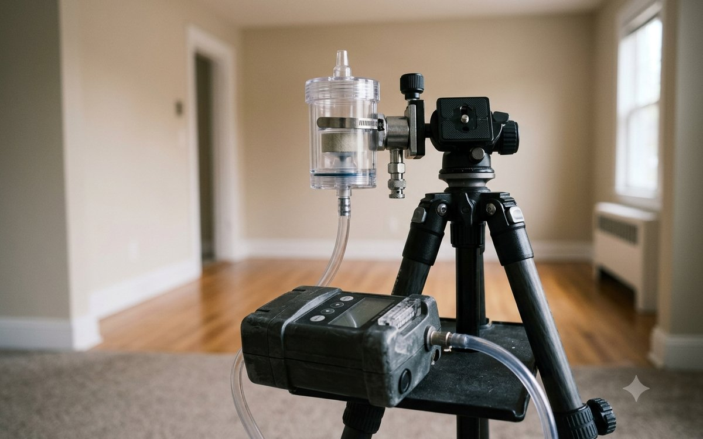

IICRC S520 StandardThe national standard for this work

We inspect, test through an accredited independent lab, remediate to the ANSI/IICRC S520 standard, and verify the result before we call it finished. Free inspections and written pricing on every job.
Inspection, laboratory testing, remediation, and verification. A focused specialty means the standard we work to is the one written for this trade, not a sideline to general contracting.
 Start Here
Start HereWe find the water first. Moisture mapping, thermal imaging, and HVAC evaluation to locate the source, followed by a written report of what we found.
Learn More → Accredited Lab
Accredited LabSpore trap and surface sampling analyzed by an independent accredited laboratory, compared against an outdoor baseline taken the same day.
Learn More → IICRC S520
IICRC S520Containment, negative air, HEPA filtration, and physical removal to the American National Standard. Plus correction of the moisture source that caused it.
Learn More →Laboratory identification before anyone quotes a price, contained removal when it is warranted, and surface verification where the species requires it.
Learn More →Proof It WorkedPost-remediation verification before containment comes down, including work performed by other contractors. Lab results are yours to keep.
Learn More →
CommercialProperty managers, multifamily, and facilities. Phased work that keeps you operating, with documentation that holds up with tenants and insurers.
Learn More →Georgia does not license mold work or regulate how it is performed. That puts the entire burden of choosing well on you, so here is exactly how we operate.

Call or request an inspection online. Emergency calls are dispatched immediately, 24 hours a day.
We evaluate the structure, map moisture, trace the source, and sample where laboratory analysis will actually answer the question.
You get the lab report and an itemized scope explaining what we recommend, what it costs, and what we would leave alone.
Contained removal, moisture source corrected, then clearance testing before barriers come down. You keep the documentation.


We serve homeowners and businesses throughout the metro Atlanta area, with emergency service available 24 hours a day, 7 days a week.
Call to Confirm ServiceWhether you have visible growth, a musty odor you cannot place, or a report that flagged moisture, we will give you clear answers and a written estimate at no cost.
We'll call you shortly. If this is an emergency, call (470) 760-5249 right now.